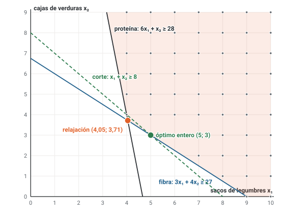
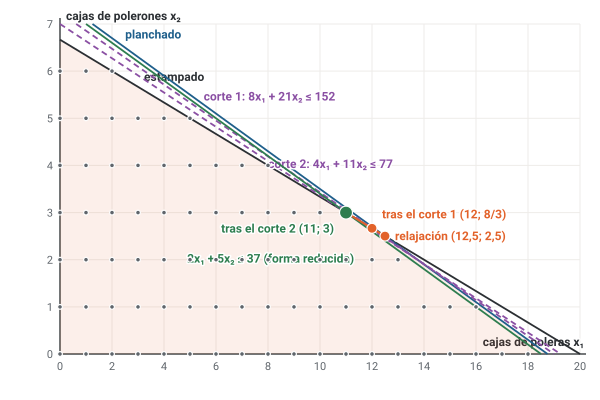

![Camilo Merino]()
Unidad 6 · Simplex dual, planos cortantes y ramificación y corte
Qué vas a poder hacer. Decidir si una desigualdad es un corte válido (admisible y separadora), reoptimizar con el simplex dual cuando una tabla pierde la factibilidad, generar cortes de Gomory desde la tabla óptima y escribirlos en las variables originales, escribir desigualdades de cobertura para una mochila y combinar cortes con ramificación, como hace un solver.
Lo que necesitas antes. De la unidad 5: la relajación, el árbol y las podas. De Optimización: la tabla del simplex (unidad 8) y la idea de dualidad (unidad 10): una tabla es óptima cuando su fila \(z\) no admite mejora, y factible cuando su lado derecho es no negativo.
Tiempo. Unas 6 horas: 2 de lectura con el ejemplo en papel y 4 de práctica. Las tablas se aprenden pivoteando a mano; el verificador de la unidad las repite en fracciones exactas para que compares.
1. La idea · achicar la región en vez de partirla
La ramificación parte la región relajada en dos trozos que ya no contienen el vértice fraccional. Un plano cortante hace algo más quirúrgico: agrega una desigualdad que deja afuera ese vértice y adentro a todos los puntos enteros. La región se achica, el PL se vuelve a resolver y el nuevo óptimo está en otro vértice. Si también es fraccional, se corta otra vez. Cuando el vértice óptimo sale entero, el simplex resolvió el problema entero sin ramificar.
Para que eso sea práctico hacen falta dos herramientas: una forma de fabricar cortes (Gomory desde la tabla, coberturas desde la estructura del problema) y una forma rápida de reoptimizar después de agregar una restricción: el simplex dual.
2. Cuándo una desigualdad es un corte válido
Sea \(S\) el conjunto de puntos enteros factibles y \(\bar x\) el óptimo de la relajación vigente. La desigualdad \(\alpha x \le \beta\) es un corte válido si cumple dos condiciones a la vez:
\[\text{admisible: } \alpha x \le \beta \;\; \forall x \in S \qquad\qquad \text{separadora: } \alpha \bar x > \beta\]
- Admisible dice que no se pierde ninguna solución. Es una afirmación sobre todos los puntos de \(S\): se demuestra con un argumento (o, en un ejercicio chico, revisando los puntos).
- Separadora dice que el corte sirve: el vértice fraccional queda afuera. Se verifica reemplazando un solo punto.
Cruzándolas quedan cuatro casos: admisible y separadora (corte válido); admisible y no separadora (inofensiva e inútil: el PL devuelve el mismo vértice); inadmisible y separadora (la peligrosa: parece que funciona, pero amputa puntos enteros y puede amputar el óptimo); inadmisible y no separadora.
Que el valor de la relajación baje no prueba nada. Una desigualdad inadmisible también lo hace bajar. Solo la demostración de admisibilidad certifica un corte.
La envoltura convexa y las facetas. El corte más fuerte posible en una dirección es una faceta de \(\text{conv}(S)\): una desigualdad admisible que se cumple con igualdad en una cara entera de la envoltura (en dos variables, un lado completo: al menos dos puntos enteros). Una admisible que toca un solo punto, o ninguno, corta menos y está dominada por alguna faceta. Describir la envoltura completa puede requerir una cantidad enorme de facetas, pero no hace falta: basta con las que rodean al vértice óptimo en la dirección del objetivo.
3. El simplex dual
Cuándo se usa. Cuando la tabla es óptima pero infactible: la fila \(z\) ya cumple la condición de optimalidad (en el lenguaje de Optimización U10, la solución dual es factible) y algún lado derecho es negativo. Pasa en tres situaciones:
- Se agrega una restricción que el óptimo actual viola: un corte, o una rama \(x_j \le \lfloor v \rfloor\) en la unidad 5.
- Cambia un lado derecho y alguna básica queda negativa (análisis de sensibilidad).
- Un mínimo con costos no negativos y restricciones \(\ge\): escritas como \(-a x + s = -b\), la base de holguras es óptima (todo \(z_j - c_j = -c_j \le 0\)) e infactible. El simplex dual lo resuelve sin la fase 1 de Optimización U9.
La convención de la tabla. La fila \(z\) lleva \(z_j - c_j\) (la ecuación es \(z + \sum_j (z_j - c_j)\,x_j = z\)). En un máximo la tabla es óptima cuando toda \(z_j - c_j \ge 0\); en un mínimo, cuando toda \(z_j - c_j \le 0\).
Las reglas.
- Sale la básica con el lado derecho más negativo (empate: la fila de más arriba). Esa es la fila pivote \(r\).
- Entra, entre las columnas con coeficiente negativo en la fila \(r\), la de menor cociente \(\dfrac{|z_j - c_j|}{|a_{rj}|}\) (empate: la de más a la izquierda).
- Se pivotea como siempre (Gauss-Jordan sobre la columna que entra).
- Si la fila \(r\) tiene lado derecho negativo y ningún coeficiente negativo, el problema es infactible: esa fila dice que una suma de no negativas vale algo negativo.
- Se repite hasta que todo lado derecho sea no negativo. Esa tabla es óptima y factible.
Por qué funciona. Es el espejo del simplex primal. El primal mantiene la factibilidad y busca la optimalidad; el dual mantiene la optimalidad y busca la factibilidad. La regla del cociente mínimo es la que garantiza que, después del pivote, la fila \(z\) siga siendo óptima. Por eso un solver reoptimiza cada nodo del árbol con el simplex dual partiendo de la tabla del padre: el hijo es el padre más una cota, y casi siempre bastan pocos pivotes.
Cuándo no aplica. Si la fila \(z\) no es óptima, el simplex dual no sirve: primero hay que recuperar la optimalidad (o usar fase 1).
4. Cortes de Gomory
La fila generadora. En la tabla óptima, cada fila dice \(x_{B_i} + \sum_{j \in N} a_{ij}\, x_j = b_i\), con \(N\) las no básicas. Si la básica debe ser entera y \(b_i\) es fraccional, se separa cada número en parte entera y parte fraccional: \(a_{ij} = \lfloor a_{ij} \rfloor + f_{ij}\) y \(b_i = \lfloor b_i \rfloor + f_i\), con \(0 \le f_{ij} < 1\) y \(0 < f_i < 1\). El corte de Gomory es:
\[\sum_{j \in N} f_{ij}\, x_j \;\ge\; f_i \qquad\qquad \text{en la tabla: } -\sum_{j \in N} f_{ij}\, x_j + s = -f_i, \;\; s \ge 0\]
La parte fraccional de un negativo. \(f = a - \lfloor a \rfloor\) siempre queda entre 0 y 1: la de \(-2/11\) es \(9/11\) (porque \(\lfloor -2/11 \rfloor = -1\)), no \(2/11\).
Por qué es admisible. Pasando las partes enteras a un lado: \(x_{B_i} + \sum \lfloor a_{ij} \rfloor x_j - \lfloor b_i \rfloor = f_i - \sum f_{ij} x_j\). En un punto entero factible el lado izquierdo es entero, así que el derecho también. El derecho es a lo más \(f_i < 1\) (las \(x_j\) son no negativas). Un entero menor que 1 es a lo más 0: \(f_i - \sum f_{ij} x_j \le 0\). Por qué separa: en el óptimo actual las no básicas valen 0 y el corte diría \(0 \ge f_i > 0\), falso.
La condición que no se negocia. El argumento usa que todas las variables de la fila, holguras incluidas, son enteras. Por eso cada restricción tiene que tener coeficientes y lado derecho enteros antes de empezar: \(x_1 - \tfrac14 x_2 \le \tfrac52\) se escribe \(4x_1 - x_2 \le 10\). Dividir una fila por el máximo común divisor de sus coeficientes y su lado derecho está permitido (sigue entera). Dividir más, no.
Qué fila usar. Cualquier fila con lado derecho fraccional sirve (también la fila \(z\) si el objetivo es entero en todo punto entero). La regla práctica del curso: la fila cuyo lado derecho tenga la parte fraccional más cercana a 0,5; con empate, la de más arriba.
Escribirlo en las variables originales. Se reemplazan las holguras por su definición: en una fila \(a x \le b\), \(s = b - a x\); en una fila \(a x \ge b\), \(s = a x - b\); y la holgura de un corte anterior, por la expresión de ese corte. Se multiplica por el denominador común y se simplifica. Así el corte se puede dibujar, revisar en los puntos enteros y comparar con la envoltura.
El ciclo. Corte, simplex dual, ¿las variables enteras quedaron enteras? Si no, otro corte. El método termina en un número finito de pasos, pero a veces en muchos: los cortes de Gomory tienden a ser débiles y cada vez más finos, y no hay una solución entera en la mano hasta el final. Es exacto y lento; por eso los solvers lo combinan con la ramificación.
5. Desigualdades de cobertura para la mochila
En una restricción de mochila \(\sum_j a_j x_j \le b\) con \(x_j \in \{0,1\}\) y \(a_j > 0\):
- Un conjunto \(C\) es una cobertura si \(\sum_{j \in C} a_j > b\): no caben todos juntos.
- La desigualdad de cobertura es \(\sum_{j \in C} x_j \le |C| - 1\): de un grupo que no cabe, a lo más se llevan todos menos uno. Es admisible por definición.
- Una cobertura es mínima si al sacar cualquiera de sus elementos ya cabe. Las mínimas dan los cortes más fuertes (una cobertura no mínima contiene a una mínima, cuyo corte la domina).
Cómo encontrar una que separe. En el óptimo relajado \(\bar x\), una cobertura separa si \(\sum_{j \in C} \bar x_j > |C| - 1\), es decir, si su exceso \(\sum_{j \in C} \bar x_j - (|C| - 1)\) es positivo. Una heurística simple: armar la cobertura con las variables que valen 1 o casi 1 en \(\bar x\) y completar con la fraccional. Con pocas variables, se revisan todas las mínimas.
Cuándo no aplica. Las coberturas aprovechan la estructura de la mochila (pesos positivos, binarias). En un modelo sin esa estructura no hay coberturas que escribir; ahí sirven los cortes de Gomory, que salen de cualquier tabla. Las coberturas se pueden fortalecer (cobertura extendida, lifting), pero eso queda fuera de esta unidad.
6. Ramificación y corte
La ramificación y corte (branch and cut) usa las dos ideas: en cada nodo, antes de ramificar, busca cortes violados por el óptimo del nodo, los agrega y reoptimiza (con simplex dual); cuando ya no encuentra cortes que valgan la pena, ramifica. Si los cortes se generan solo en la raíz y después se ramifica sin cortar más, se llama corte y ramificación.
El algoritmo, para un máximo:
- Resolver la relajación del nodo. Si es infactible, podar.
- Si \(z\) no supera a la incumbente, podar por cota.
- Si la solución es entera, es candidata a incumbente: podar por integralidad.
- Buscar un corte válido violado. Si se encuentra, agregarlo y volver a 1.
- Si no, ramificar en una variable fraccional.
Cuidado con la validez. Un corte que se dedujo usando las ramas del nodo (por ejemplo, con variables fijas) vale solo en ese subárbol. Los cortes deducidos de las restricciones originales, como las coberturas, valen en todo el árbol y se guardan para todos los nodos.
Por qué conviene. Cada corte sube (en mínimo) o baja (en máximo) la cota del nodo, y una cota más ajustada poda antes. Un árbol que con ramificación pura tiene decenas de nodos puede cerrarse con pocos (ejercicio 6.8).
7. Cómo lo hace un solver moderno
CPLEX, Gurobi o CBC (este último libre) no aplican una sola técnica, sino todas a la vez, en este orden aproximado:
- Preprocesamiento: elimina variables y restricciones redundantes, ajusta coeficientes (una gran M floja se achica sola si el solver deduce una cota mejor) y fija variables que solo pueden tomar un valor.
- Cortes en la raíz: varias familias (Gomory mixtos, cobertura, redondeo entero mixto, clique, cubiertas de flujo, cotas implícitas). Agrega tandas, reoptimiza con simplex dual y descarta los cortes que quedan flojos. Cada familia ayuda poco sola; juntas cambian el tiempo de solución por órdenes de magnitud.
- Heurísticas primales: redondeos inteligentes y búsquedas locales para tener una incumbente temprano.
- Ramificación y corte: elige variable con pseudo-costos o strong branching, explora con una mezcla de profundidad y mejor primero, y sigue cortando en algunos nodos.
- Parada: cuando el gap relativo baja de la tolerancia (
epgapen CPLEX, por defecto 0,01 %) o se acaba el tiempo.
Para el modelador, la lección es que la formulación pesa más que el algoritmo: una restricción bien ajustada (como \(q \le U y\) en vez de \(q \le 1000\,y\)) es un corte que el solver no tiene que adivinar.
8. Cuándo no aplica y qué cuesta
- Gomory con datos no enteros no es válido tal cual: hay que escalar a enteros primero. En un modelo mixto (algunas continuas) el corte fraccional de esta unidad no sirve; existe una versión mixta, que es la que usan los solvers.
- El simplex dual necesita una fila \(z\) óptima. Si cambió el objetivo, lo que se perdió es la optimalidad y se sigue con el primal.
- Muchos cortes agrandan el PL. Cada corte es una fila más; un PL con miles de cortes flojos se vuelve lento. Se agregan los que separan y se botan los que dejan de estar activos.
9. Ejemplo resuelto · el comedor solidario
Un comedor solidario compra cada semana sacos de legumbres (\(x_1\), $7.000 cada uno) y cajas de verduras (\(x_2\), $8.000). Un saco aporta 6 raciones de proteína y 3 de fibra; una caja, 1 de proteína y 4 de fibra. La semana necesita al menos 28 raciones de proteína y 27 de fibra. Los sacos y las cajas se compran enteros.
Paso 1 · Pieza por pieza.
- Variables: \(x_1\) = sacos de legumbres que se compran en la semana; \(x_2\) = cajas de verduras que se compran en la semana.
- \(\min z = 7x_1 + 8x_2\) (miles de pesos) s.a. \(6x_1 + x_2 \ge 28\) (proteína), \(3x_1 + 4x_2 \ge 27\) (fibra).
- Naturaleza: \(x_1, x_2 \in \mathbb{Z}_0^+\).
Paso 2 · La tabla para el simplex dual. Cada \(\ge\) se escribe con su exceso: \(-6x_1 - x_2 + s_1 = -28\) y \(-3x_1 - 4x_2 + s_2 = -27\), donde \(s_1\) y \(s_2\) son las raciones de proteína y de fibra sobre el mínimo. La fila \(z\) tiene \(z_j - c_j = -7\) y \(-8\): todas \(\le 0\), óptima para un mínimo. Los lados derechos son negativos: infactible. Es el caso 3 del punto 3, sin fase 1.
Paso 3 · Dos pivotes del simplex dual. Sale \(s_1\) (lado derecho \(-28\), el más negativo). Cocientes: \(7/6\) para \(x_1\) y \(8\) para \(x_2\); entra \(x_1\). El pivote va en negrita y la última fila tiene los cocientes:
| Base | x₁ | x₂ | s₁ | s₂ | LD |
|---|---|---|---|---|---|
| z | −7 | −8 | 0 | 0 | 0 |
| s₁ | −6 | −1 | 1 | 0 | −28 |
| s₂ | −3 | −4 | 0 | 1 | −27 |
| |z_j − c_j| / |a_rj| | 7/6 | 8 |
Ahora sale \(s_2\) (\(-13\)). Cocientes \(41/21\) para \(x_2\) y \(7/3\) para \(s_1\); entra \(x_2\):
| Base | x₁ | x₂ | s₁ | s₂ | LD |
|---|---|---|---|---|---|
| z | 0 | −41/6 | −7/6 | 0 | 98/3 |
| x₁ | 1 | 1/6 | −1/6 | 0 | 14/3 |
| s₂ | 0 | −7/2 | −1/2 | 1 | −13 |
| |z_j − c_j| / |a_rj| | 41/21 | 7/3 |
Tras el segundo pivote todo lado derecho es no negativo: la relajación vale \(1219/21 = 58{,}05\) en \((85/21; 26/7)\) (es la primera tabla del paso 4, sin la fila del corte). Ninguna compra fraccional cuesta menos de 58,05 mil pesos.
Paso 4 · El corte de Gomory. Las dos básicas son fraccionales: \(x_1 = 85/21\) (parte fraccional 1/21) y \(x_2 = 26/7\) (parte fraccional 5/7). La más cercana a 0,5 es la de \(x_2\). Su fila es \(x_2 + \tfrac17 s_1 - \tfrac27 s_2 = \tfrac{26}{7}\); las partes fraccionales son \(1/7\) y \(5/7\) (la de \(-2/7\) es \(5/7\)):
\[\tfrac17 s_1 + \tfrac57 s_2 \ge \tfrac57 \quad\Longrightarrow\quad -\tfrac17 s_1 - \tfrac57 s_2 + s_3 = -\tfrac57\]
En las variables originales, con \(s_1 = 6x_1 + x_2 - 28\) y \(s_2 = 3x_1 + 4x_2 - 27\): \((6x_1 + x_2 - 28) + 5(3x_1 + 4x_2 - 27) \ge 5\), o sea \(21x_1 + 21x_2 \ge 168\): \(x_1 + x_2 \ge 8\). El óptimo relajado suma 7,76: el corte lo separa. (La fila de \(x_1\) habría dado \(5x_1 + x_2 \ge 24\).)
Paso 5 · Simplex dual otra vez. Sale \(s_3\); cocientes \(4/3\) para \(s_1\) y \(41/15\) para \(s_2\); entra \(s_1\):
| Base | x₁ | x₂ | s₁ | s₂ | s₃ | LD |
|---|---|---|---|---|---|---|
| z | 0 | 0 | −4/21 | −41/21 | 0 | 1219/21 |
| x₁ | 1 | 0 | −4/21 | 1/21 | 0 | 85/21 |
| x₂ | 0 | 1 | 1/7 | −2/7 | 0 | 26/7 |
| s₃ | 0 | 0 | −1/7 | −5/7 | 1 | −5/7 |
| |z_j − c_j| / |a_rj| | 4/3 | 41/15 |
| Base | x₁ | x₂ | s₁ | s₂ | s₃ | LD |
|---|---|---|---|---|---|---|
| z | 0 | 0 | 0 | −1 | −4/3 | 59 |
| x₁ | 1 | 0 | 0 | 1 | −4/3 | 5 |
| x₂ | 0 | 1 | 0 | −1 | 1 | 3 |
| s₁ | 0 | 0 | 1 | 5 | −7 | 5 |
Todo es entero: \((5; 3)\) con \(z = 59\). Es el óptimo del problema entero (lo confirman milp y la enumeración).

En OPL (modelos/u06_comedor.mod):
/*********************************************
* Unidad 6 · Ejemplo resuelto
* Comedor solidario: sacos de legumbres y cajas de verduras al menor costo
* Base abierta de ingeniería.
*********************************************/
dvar int+ sacos; // sacos de legumbres que se compran en la semana
dvar int+ cajas; // cajas de verduras que se compran en la semana
minimize 7 * sacos + 8 * cajas; // miles de pesos
subject to {
Proteina: 6 * sacos + 1 * cajas >= 28; // raciones de proteína
Fibra: 3 * sacos + 4 * cajas >= 27; // raciones de fibra
}
execute {
writeln("sacos = ", sacos);
writeln("cajas = ", cajas);
}
Cómo se lee.
- El plan: 5 sacos y 3 cajas, 59 mil pesos a la semana. Sobran 5 raciones de proteína (\(s_1 = 5\)) y ninguna de fibra.
- El corte tiene lectura: «hay que comprar al menos 8 bultos». Con 7 bultos no se llega: la relajación necesitaba 7,76 y los bultos no se parten.
- Un solo corte bastó y el gap entre la relajación y el entero era apenas 1,61 %. No siempre es así: el caso de la sección 13 necesita dos cortes, y la forma en que se escribe la restricción decide cuántos.
10. Errores típicos
| Error | Cómo evitarlo |
|---|---|
| Dar por válido un corte porque bajó el valor de la relajación | demuestra la admisibilidad (o revisa todos los puntos enteros); que baje la relajación no prueba nada |
| Tomar como parte fraccional de \(-2/11\) el valor \(2/11\) | \(f = a - \lfloor a \rfloor\): la de \(-2/11\) es \(9/11\) |
| Generar Gomory con coeficientes o lados derechos fraccionales | escala cada fila a enteros antes; divide solo por el máximo común divisor de coeficientes y lado derecho |
| Escribir el corte como \(\sum f_j x_j \le f_0\) | es \(\ge\); en la tabla entra como \(-\sum f_j x_j + s = -f_0\) |
| Elegir la que entra en el simplex dual por el coeficiente más negativo | entra la de menor \(|z_j - c_j| / |a_{rj}|\) entre las de coeficiente negativo en la fila que sale |
| Aplicar el simplex dual con la fila \(z\) no óptima | primero óptima; el dual solo recupera factibilidad |
| No reconocer la infactibilidad | fila con lado derecho negativo y ningún coeficiente negativo: el PL no tiene solución |
| Reemplazar la holgura de un \(\ge\) como \(b - a x\) | en un \(\ge\) es \(s = a x - b\) |
| Escribir una cobertura que sí cabe, o con \(\le |C|\) | cobertura: los pesos suman más que la capacidad; el corte es \(\le |C| - 1\) |
| Guardar para todo el árbol un corte deducido con ramas | solo los cortes deducidos de las restricciones originales son globales |
| Definir la binaria de un acople sin «en otro caso», o la gran M sin unidad | tres piezas por variable; \(M\) es un parámetro con unidad, y la mejor es la cota real |
11. Práctica
Diez ejercicios: 6.1 a 6.4 básicos, 6.5 a 6.8 intermedios, 6.9 y 6.10 de desafío. Salvo que se diga otra cosa, el corte sale de la fila con parte fraccional más cercana a 0,5 (empate: la de más arriba) y el simplex dual sigue las reglas del punto 3. Las pautas están en la sección 12.
Los ejercicios 6.1, 6.2, 6.3, 6.6 y 6.7 usan el mismo problema, el problema H: \(\max z = 3x_1 + 4x_2\) s.a. \(2x_1 + 3x_2 \le 13\), \(5x_1 + 2x_2 \le 18\), \(x_1, x_2 \in \mathbb{Z}_0^+\). Su relajación tiene óptimo \((28/11; 29/11)\) con \(z = 200/11 = 18{,}18\).
6.1 · Seis desigualdades (básico). Marca los puntos enteros del problema H. Para cada desigualdad di si es admisible (si no, da un punto entero que la viole), si separa al óptimo relajado, si es faceta de la envoltura y en cuál de los cuatro casos cae: (i) \(x_1 + x_2 \le 5\); (ii) \(2x_1 + x_2 \le 7\); (iii) \(x_2 \le 2\); (iv) \(x_1 \le 3\); (v) \(x_1 + 2x_2 \le 9\); (vi) \(3x_1 + 4x_2 \le 18\).
6.2 · Todos los cortes de una tabla (básico). Esta es la tabla óptima de la relajación del problema H (\(s_1\) y \(s_2\) son las holguras):
| Base | x₁ | x₂ | s₁ | s₂ | LD |
|---|---|---|---|---|---|
| z | 0 | 0 | 14/11 | 1/11 | 200/11 |
| x₂ | 0 | 1 | 5/11 | −2/11 | 29/11 |
| x₁ | 1 | 0 | −2/11 | 3/11 | 28/11 |
(a) Escribe el corte de Gomory de cada fila. (b) Escríbelos en \(x_1\) y \(x_2\). (c) ¿Cuál elige la regla del 0,5? (d) Comprueba que los dos separan a \((28/11; 29/11)\).
6.3 · Una restricción nueva (básico). Sobre la tabla de 6.2: (a) agrega la rama \(x_1 \le 2\) (con holgura \(s_3\)), escríbela en las no básicas y reoptimiza con el simplex dual. ¿Qué nodo de la unidad 5 acabas de resolver? (b) Agrega en cambio \(x_1 + x_2 \ge 6\). ¿Qué dice la tabla?
6.4 · Coberturas (básico). Una mochila tiene la restricción \(7x_1 + 6x_2 + 5x_3 + 9x_4 + 4x_5 \le 17\) y el objetivo \(\max 13x_1 + 10x_2 + 8x_3 + 16x_4 + 5x_5\), con \(x_j \in \{0,1\}\). (a) ¿Es \(\{1, 2, 3\}\) una cobertura? ¿Es mínima? (b) Lista todas las coberturas mínimas. (c) Resuelve la relajación por ranking. (d) ¿Qué desigualdades de cobertura separan a ese óptimo?
6.5 · Gomory hasta el final (intermedio). Resuelve \(\max z = 5x_1 + 4x_2\) s.a. \(x_1 + 4x_2 \le 25\), \(7x_1 + 5x_2 \le 23\), \(x_1, x_2 \in \mathbb{Z}_0^+\) con cortes de Gomory: (a) la relajación con simplex; (b) cada corte, en la tabla y en \(x_1\), \(x_2\); (c) cada reoptimización con simplex dual; (d) dibuja la región con los cortes.
6.6 · Cambia un lado derecho (intermedio). En el problema H, la primera disponibilidad baja de 13 a 6. (a) Usa las columnas de las holguras de la tabla de 6.2 (\(B^{-1}\)) para calcular el nuevo lado derecho y el nuevo \(z\) sin resolver de nuevo. (b) ¿Qué condición se perdió y cuál se conserva? (c) Reoptimiza con el simplex dual y comprueba gráficamente.
6.7 · La envoltura del problema H (intermedio). (a) Dibuja la envoltura convexa de los puntos enteros y lista sus vértices. (b) Escribe sus facetas con coeficientes enteros. (c) ¿Alguna restricción original es faceta? (d) Para \(\max 3x_1 + 4x_2\), \(\max x_1\), \(\max x_2\) y \(\max x_1 + x_2\), di el óptimo sobre la envoltura y qué facetas hacen falta.
6.8 · Ramificación y corte en la mochila (intermedio). Con la mochila de 6.4, aplica ramificación y corte:
en cada nodo, mientras haya una cobertura mínima violada agrégala (la de mayor exceso) y reoptimiza; si no
hay, ramifica en la fraccional (profundidad, «\(= 1\)» primero). Las relajaciones con cortes ya no salen por
ranking: resuélvelas con OPL (float+) o con un solver. ¿Cuántos nodos y cuántos PL usas? Compara con
ramificación y acotamiento sin cortes.
6.9 · El rango de un corte y una demostración (desafío). Con el problema de 6.5: (a) ¿para qué valores de \(b\) la desigualdad \(5x_1 + 4x_2 \le b\) es un corte válido para la relajación inicial? (b) Demuestra que \(x_1 + x_2 \le 4\) es admisible sin revisar puntos: multiplica una restricción por un número no negativo y redondea. (c) ¿Es faceta? (d) ¿Qué pasaría con el argumento de (b) si \(x_1\) fuera continua?
6.10 · La gran M como corte (desafío). Una cervecería decide si habilitar dos líneas este mes, la de rubia y la de roja. Habilitar cuesta 172 y 97 mil pesos; cada hectolitro deja 14 y 11 mil; las líneas hacen a lo más 40 y 30 hectolitros, y hay 55 hectolitros de mosto. (a) Escribe el modelo pieza por pieza con una gran M en el acople. (b) Resuelve la relajación con \(M = 250\) y con \(M\) igual al tope de cada línea, y el problema entero. (c) Compara los gaps de las dos relajaciones. (d) Muestra que \(q_j \le U_j\, y_j\) es un corte válido para la relajación floja. (e) ¿Cambió el conjunto de soluciones enteras?
12. Pautas
6.1. Hay 15 puntos enteros factibles y el óptimo entero es \((2; 3)\) con \(z = 18\).
| Desigualdad | ¿Admisible? | Valor en el óptimo relajado | ¿Separa? | ¿Faceta? | Caso |
|---|---|---|---|---|---|
| \(x_1 + x_2 \le 5\) | sí | 57/11 | sí | no | corte válido |
| \(2x_1 + x_2 \le 7\) | sí | 85/11 | sí | sí | corte válido |
| \(x_2 \le 2\) | no: la viola (0; 3), (0; 4) | 29/11 | sí | no | inadmisible y separa |
| \(x_1 \le 3\) | sí | 28/11 | no | sí | admisible, no separa |
| \(x_1 + 2x_2 \le 9\) | sí | 86/11 | no | no | admisible, no separa |
| \(3x_1 + 4x_2 \le 18\) | sí | 200/11 | sí | no | corte válido |
(ii) es el mejor corte de la lista: válido y faceta (toca \((2; 3)\) y \((3; 1)\)). (vi) es el objetivo acotado por el óptimo entero: válido, pero toca un solo punto. (iii) separa y por eso «parece» funcionar, pero amputa \((2; 3)\), el óptimo. (iv) es faceta pero no separa: es inútil en este momento. Lectura: separar es fácil; lo que se demuestra es la admisibilidad.
6.2. (a) Fila de \(x_2\): \(x_2 + \tfrac{5}{11}s_1 - \tfrac{2}{11}s_2 = \tfrac{29}{11}\); partes fraccionales \(5/11\) y \(9/11\); corte \(\tfrac{5}{11}s_1 + \tfrac{9}{11}s_2 \ge \tfrac{7}{11}\). Fila de \(x_1\): partes fraccionales \(9/11\) y \(3/11\); corte \(\tfrac{9}{11}s_1 + \tfrac{3}{11}s_2 \ge \tfrac{6}{11}\). (b) Con \(s_1 = 13 - 2x_1 - 3x_2\) y \(s_2 = 18 - 5x_1 - 2x_2\): el de \(x_2\) es \(5x_1 + 3x_2 \le 20\) y el de \(x_1\) es \(x_1 + x_2 \le 5\). (c) La parte fraccional de \(x_1\) (6/11) está más cerca de 0,5 que la de \(x_2\) (7/11): se elige \(x_1 + x_2 \le 5\), la desigualdad (i) de 6.1. (d) \(5 \cdot 28/11 + 3 \cdot 29/11 = 227/11 > 20\) y \(57/11 > 5\). Lectura: Gomory fabrica cortes válidos sin mirar los puntos enteros, pero no necesariamente facetas.
6.3. (a) \(x_1 \le 2\) con holgura: \(x_1 + s_3 = 2\). Restando la fila de \(x_1\) queda la fila de \(s_3\) con lado derecho \(-6/11\):
| Base | x₁ | x₂ | s₁ | s₂ | s₃ | LD |
|---|---|---|---|---|---|---|
| z | 0 | 0 | 14/11 | 1/11 | 0 | 200/11 |
| x₂ | 0 | 1 | 5/11 | −2/11 | 0 | 29/11 |
| x₁ | 1 | 0 | −2/11 | 3/11 | 0 | 28/11 |
| s₃ | 0 | 0 | 2/11 | −3/11 | 1 | −6/11 |
| |z_j − c_j| / |a_rj| | 1/3 |
Sale \(s_3\); la única columna con coeficiente negativo es \(s_2\) (cociente 1/3); entra \(s_2\):
| Base | x₁ | x₂ | s₁ | s₂ | s₃ | LD |
|---|---|---|---|---|---|---|
| z | 0 | 0 | 4/3 | 0 | 1/3 | 18 |
| x₂ | 0 | 1 | 1/3 | 0 | −2/3 | 3 |
| x₁ | 1 | 0 | 0 | 0 | 1 | 2 |
| s₂ | 0 | 0 | −2/3 | 1 | −11/3 | 2 |
El óptimo es \((2; 3)\) con \(z = 18\): entero. Es el nodo \(x_1 \le 2\) de un árbol de la unidad 5, resuelto con un solo pivote desde la tabla del padre. (b) La fila de \(s_3\) queda así:
| Base | x₁ | x₂ | s₁ | s₂ | s₃ | LD |
|---|---|---|---|---|---|---|
| z | 0 | 0 | 14/11 | 1/11 | 0 | 200/11 |
| x₂ | 0 | 1 | 5/11 | −2/11 | 0 | 29/11 |
| x₁ | 1 | 0 | −2/11 | 3/11 | 0 | 28/11 |
| s₃ | 0 | 0 | 3/11 | 1/11 | 1 | −9/11 |
Lado derecho \(-9/11\) y ningún coeficiente negativo: infactible. Tiene sentido: el máximo de \(x_1 + x_2\) en la región es 5,18. Lectura: el simplex dual también es la prueba de infactibilidad de un nodo.
6.4. (a) \(7 + 6 + 5 = 18 > 17\): es cobertura. Sacando cualquiera suma 11, 12 o 13: es mínima. (b) Las mínimas son {1, 2, 3}, {1, 2, 4}, {1, 3, 4}, {1, 4, 5}, {2, 3, 4}, {2, 4, 5} y {3, 4, 5}. (c) Valor por unidad de peso: 1,857; 1,667; 1,6; 1,778; 1,25. Entran \(x_1\) (7) y \(x_4\) (16 en total); \(x_2\) entra con \(1/6\): óptimo \((1; 1/6; 0; 1; 0)\) con \(z = 30{,}67\). (d) El exceso de cada una:
| Cobertura mínima | Suma de pesos | Exceso en el óptimo relajado | ¿Separa? |
|---|---|---|---|
| {1, 2, 3} | 18 | −5/6 | no |
| {1, 2, 4} | 22 | 1/6 | sí |
| {1, 3, 4} | 21 | 0 | no |
| {1, 4, 5} | 20 | 0 | no |
| {2, 3, 4} | 20 | −5/6 | no |
| {2, 4, 5} | 19 | −5/6 | no |
| {3, 4, 5} | 18 | −1 | no |
Solo {1, 2, 4} separa: \(x_1 + x_2 + x_4 \le 2\), violada por \(1 + 1/6 + 1\). Lectura: las coberturas que contienen a las variables en 1 son las candidatas; las que tienen exceso 0 tocan el óptimo pero no lo cortan.
6.5. (a) El simplex (dos pivotes) deja:
| Base | x₁ | x₂ | s₁ | s₂ | LD |
|---|---|---|---|---|---|
| z | 3/5 | 0 | 0 | 4/5 | 92/5 |
| s₁ | −23/5 | 0 | 1 | −4/5 | 33/5 |
| x₂ | 7/5 | 1 | 0 | 1/5 | 23/5 |
Relajación \((0; 23/5)\) con \(z = 18{,}4\). (b) Las filas de \(s_1\) y de \(x_2\) empatan (parte fraccional 3/5); se usa la de \(s_1\): \(\tfrac25 x_1 + \tfrac15 s_2 \ge \tfrac35\), que en \(x\) es \(x_1 + x_2 \le 4\) (la fila de \(x_2\) da el mismo). (c) Simplex dual:
| Base | x₁ | x₂ | s₁ | s₂ | s₃ | LD |
|---|---|---|---|---|---|---|
| z | 3/5 | 0 | 0 | 4/5 | 0 | 92/5 |
| s₁ | −23/5 | 0 | 1 | −4/5 | 0 | 33/5 |
| x₂ | 7/5 | 1 | 0 | 1/5 | 0 | 23/5 |
| s₃ | −2/5 | 0 | 0 | −1/5 | 1 | −3/5 |
| |z_j − c_j| / |a_rj| | 3/2 | 4 |
Queda \((3/2; 5/2)\) con \(z = 17{,}5\). Segundo corte (todas las filas dan el mismo): \(\tfrac12 s_2 + \tfrac12 s_3 \ge \tfrac12\), que en \(x\) es \(4x_1 + 3x_2 \le 13\):
| Base | x₁ | x₂ | s₁ | s₂ | s₃ | s₄ | LD |
|---|---|---|---|---|---|---|---|
| z | 0 | 0 | 0 | 1/2 | 3/2 | 0 | 35/2 |
| s₁ | 0 | 0 | 1 | 3/2 | −23/2 | 0 | 27/2 |
| x₂ | 0 | 1 | 0 | −1/2 | 7/2 | 0 | 5/2 |
| x₁ | 1 | 0 | 0 | 1/2 | −5/2 | 0 | 3/2 |
| s₄ | 0 | 0 | 0 | −1/2 | −1/2 | 1 | −1/2 |
| |z_j − c_j| / |a_rj| | 1 | 3 |
| Base | x₁ | x₂ | s₁ | s₂ | s₃ | s₄ | LD |
|---|---|---|---|---|---|---|---|
| z | 0 | 0 | 0 | 0 | 1 | 1 | 17 |
| s₁ | 0 | 0 | 1 | 0 | −13 | 3 | 12 |
| x₂ | 0 | 1 | 0 | 0 | 4 | −1 | 3 |
| x₁ | 1 | 0 | 0 | 0 | −3 | 1 | 1 |
| s₂ | 0 | 0 | 0 | 1 | 1 | −2 | 1 |
Óptimo entero \((1; 3)\) con \(z = 17\). (d) El primer corte pasa por \((0; 4)\) y \((1; 3)\); el segundo, por \((1; 3)\). Lectura: dos cortes y tres PL, sin ramificar; la relajación prometía 18,4 y lo alcanzable era 17.
6.6. (a) Con \(B^{-1}\) (columnas de \(s_1\) y \(s_2\)): \(x_2 = \tfrac{5}{11}\cdot 6 - \tfrac{2}{11}\cdot 18 = -6/11\) y \(x_1 = -\tfrac{2}{11}\cdot 6 + \tfrac{3}{11}\cdot 18 = 42/11\); \(z = \tfrac{14}{11}\cdot 6 + \tfrac{1}{11}\cdot 18 = 102/11 = 9{,}27\). (b) La fila \(z\) no cambia (sigue óptima); se perdió la factibilidad (\(x_2 < 0\)). Es el caso para el simplex dual:
| Base | x₁ | x₂ | s₁ | s₂ | LD |
|---|---|---|---|---|---|
| z | 0 | 0 | 14/11 | 1/11 | 102/11 |
| x₂ | 0 | 1 | 5/11 | −2/11 | −6/11 |
| x₁ | 1 | 0 | −2/11 | 3/11 | 42/11 |
| |z_j − c_j| / |a_rj| | 1/2 |
| Base | x₁ | x₂ | s₁ | s₂ | LD |
|---|---|---|---|---|---|
| z | 0 | 1/2 | 3/2 | 0 | 9 |
| s₂ | 0 | −11/2 | −5/2 | 1 | 3 |
| x₁ | 1 | 3/2 | 1/2 | 0 | 3 |
Nuevo óptimo \((3; 0)\) con \(z = 9\). (c) Gráficamente, con \(2x_1 + 3x_2 \le 6\) y \(5x_1 + 2x_2 \le 18\) la región es el triángulo de vértices \((0; 0)\), \((3; 0)\) y \((0; 2)\): la segunda restricción ya no toca. \(z\) vale 9 en \((3; 0)\) y 8 en \((0; 2)\). Lectura: un pivote en vez de resolver todo de nuevo.
6.7. (a) Vértices: (0; 0), (3; 0), (3; 1), (2; 3), (0; 4). (b) Facetas: \(x_2 \ge 0\), \(x_1 \le 3\), \(2x_1 + x_2 \le 7\), \(x_1 + 2x_2 \le 8\), \(x_1 \ge 0\). (c) Ninguna original: \(2x_1 + 3x_2 \le 13\) toca solo \((2; 3)\) y \(5x_1 + 2x_2 \le 18\) no toca ningún punto entero. (d):
| Objetivo | Óptimo sobre la envoltura | Facetas activas |
|---|---|---|
| \(\max 3x_1 + 4x_2\) | (2; 3) | \(2x_1 + x_2 \le 7\), \(x_1 + 2x_2 \le 8\) |
| \(\max x_1\) | (3; 0) y (3; 1) | \(x_1 \le 3\) |
| \(\max x_2\) | (0; 4) | \(x_1 + 2x_2 \le 8\), \(x_1 \ge 0\) |
| \(\max x_1 + x_2\) | (2; 3) | \(2x_1 + x_2 \le 7\), \(x_1 + 2x_2 \le 8\) |
Para el objetivo del problema bastan dos facetas de cinco. Lectura: no se describe la envoltura completa, solo el rincón donde está el óptimo.
6.8. Ramificación y corte (cada nodo con sus relajaciones, en orden):
| Nodo | Ramas | Relajaciones resueltas (solución; z) | Corte agregado | Qué pasa |
|---|---|---|---|---|
| 0 | — | (1; 1/6; 0; 1; 0); 30,67 → (1; 0; 1/5; 1; 0); 30,6 → (1; 0; 0; 1; 1/4); 30,25 → (7/8; 1/8; 1/8; 1; 1/8); 30,25 | \(x_1 + x_2 + x_4 \le 2\), \(x_1 + x_3 + x_4 \le 2\), \(x_1 + x_4 + x_5 \le 2\) | ramifica en x₁ |
| 1 | x₁ = 1 | (1; 1/6; 1/6; 5/6; 1/6); 30,17 | — | ramifica en x₂ |
| 2 | x₁ = 1, x₂ = 1 | (1; 1; 4/5; 0; 0); 29,4 → (1; 1; 0; 0; 1); 28 | \(x_1 + x_2 + x_3 \le 2\) | entera → incumbente |
| 3 | x₁ = 1, x₂ = 0 | (1; 0; 0; 1; 0); 29 | — | entera → incumbente |
| 4 | x₁ = 0 | (0; 1; 2/5; 1; 0); 29,2 → (0; 1; 0; 1; 1/2); 28,5 | \(x_2 + x_3 + x_4 \le 2\) | poda por cota |
5 nodos y 10 PL. El óptimo son los objetos 1 y 4, con \(z = 29\). Ramificación y acotamiento sin cortes, en profundidad y «\(= 1\)» primero, necesita 27 PL. Lectura: tres coberturas en la raíz bajaron la cota de 30,67 a 30,25 y dejaron una relajación «más entera»; el árbol casi desaparece.
6.9. (a) Admisible exige \(b \ge 17\) (el óptimo entero) y separadora exige \(b < 18{,}4\) (la relajación): \(17 \le b < 18{,}4\); con \(b\) entero, 17 o 18. (b) Con \(\lambda = 1/5\) sobre la segunda restricción: \(\tfrac75 x_1 + x_2 \le \tfrac{23}{5}\). Como \(x_1 \ge 0\), \(x_1 + x_2 \le \tfrac75 x_1 + x_2 \le 4{,}6\); y \(x_1 + x_2\) es entero, así que \(x_1 + x_2 \le 4\). Es el primer corte de Gomory de 6.5: Gomory es esta misma operación (combinar y redondear) hecha desde la tabla. (c) Sí: toca \((0; 4)\) y \((1; 3)\). (d) Si \(x_1\) fuera continua, \(x_1 + x_2\) no tendría que ser entero y el redondeo de 4,6 a 4 dejaría de valer. Lectura: el redondeo es la parte que exige integralidad.
6.10. (a) \(y_j = 1\) si se habilita la línea \(j\) este mes; \(0\) en otro caso, \(\forall j \in\) {rubia, roja};
\(q_j\) = hectolitros que hace la línea \(j\) en el mes, \(\forall j\). \(\max \sum_j (c_j q_j - f_j y_j)\) s.a. \(\sum_j q_j \le 55\); \(q_j \le U_j \;\forall j\); \(q_j \le M_j y_j \;\forall j\); \(y_j \in \{0,1\}\), \(q_j \ge 0 \;\forall j\). En OPL
(modelos/u06_e10_cerveceria.mod, con u06_e10_floja.dat y u06_e10_ajustada.dat):
/*********************************************
* Unidad 6 · Ejercicio 6.10
* Cervecería: habilitar dos líneas con costo fijo; la gran M es un dato
* Datos en u06_e10_floja.dat o u06_e10_ajustada.dat. Base abierta de ingeniería.
*********************************************/
{string} Lineas = ...;
float margen[Lineas] = ...; // miles de pesos por hectolitro
float fijo[Lineas] = ...; // miles de pesos por habilitar la línea en el mes
float tope[Lineas] = ...; // hectolitros que la línea alcanza a hacer en el mes
float K = ...; // hectolitros de mosto disponibles en el mes
float M[Lineas] = ...; // gran M del acoplamiento
dvar float+ q[Lineas]; // hectolitros que se hacen en la línea en el mes
dvar boolean y[Lineas]; // 1 si se habilita la línea; 0 en otro caso
maximize sum(l in Lineas) (margen[l] * q[l] - fijo[l] * y[l]);
subject to {
Mosto:
sum(l in Lineas) q[l] <= K;
forall(l in Lineas)
Tope:
q[l] <= tope[l];
forall(l in Lineas)
Acople:
q[l] <= M[l] * y[l];
}
execute {
for (var l in Lineas) {
writeln("q[", l, "] = ", q[l]);
writeln("y[", l, "] = ", y[l]);
}
}
// Unidad 6 · ejercicio 6.10 · gran M floja (250 hectolitros en las dos líneas)
Lineas = {"rubia", "roja"};
margen = [14 11];
fijo = [172 97];
tope = [40 30];
K = 55;
M = [250 250];
(b) Con \(M = 250\) la relajación vale 691,66 (miles de pesos) con \(y = (4/25; 3/50)\): habilita una fracción mínima de cada línea y paga una fracción mínima del costo fijo. Con \(M\) igual al tope vale 504,5 con \(y_2 = 1/2\). El entero vale 456: las dos líneas, con 40 y 15 hectolitros. (c) Gap de la relajación floja: 51,7 %; de la ajustada: 10,6 %; casi 5 veces menor (4,9). (d) Admisible: con \(y_j = 0\) dice \(q_j \le 0\), que el acople ya obligaba; con \(y_j = 1\) dice \(q_j \le U_j\), que ya era restricción. Separa: la solución floja tiene \(q_1 = 40 > 40 \cdot 4/25\) y \(q_2 = 15 > 30 \cdot 3/50\). (e) No: las dos formulaciones tienen exactamente los mismos planes enteros. Lectura: ajustar la M es agregar un corte a mano, y es lo primero que hace el preprocesamiento de un solver.
13. Caso integrador · el turno del sábado, sin ramificar
Este caso sigue a Estampa Sur, un taller de serigrafía ficticio, por todo el ramo. La unidad 5 resolvió el turno del sábado (cajas de 24 poleras y polerones, 240 minutos de estampado y 150 de planchado) con un árbol de 7 PL. Aquí se resuelve el mismo problema con cortes de Gomory y simplex dual, tabla por tabla.
Lo que recibe. De la unidad 5: \(\max 33{.}120\,x_1 + 94{.}560\,x_2\) s.a. \(12x_1 + 36x_2 \le 240\) (estampado, minutos) y \(8x_1 + 20x_2 \le 150\) (planchado, minutos), \(x_1, x_2 \in \mathbb{Z}_0^+\). Coeficientes y lados derechos enteros: las holguras \(s_1\) y \(s_2\) son minutos enteros y Gomory se puede usar.
La relajación con simplex. La tabla óptima sale del simplex de Optimización (unidad 8, el mismo
u08_simplex.py), escrita con la fila \(z\) de esta unidad. Entra \(x_2\) y después \(x_1\):
| Base | x₁ | x₂ | s₁ | s₂ | LD |
|---|---|---|---|---|---|
| z | −33.120 | −94.560 | 0 | 0 | 0 |
| s₁ | 12 | 36 | 1 | 0 | 240 |
| s₂ | 8 | 20 | 0 | 1 | 150 |
| Base | x₁ | x₂ | s₁ | s₂ | LD |
|---|---|---|---|---|---|
| z | −1.600 | 0 | 7880/3 | 0 | 630.400 |
| x₂ | 1/3 | 1 | 1/36 | 0 | 20/3 |
| s₂ | 4/3 | 0 | −5/9 | 1 | 50/3 |
| Base | x₁ | x₂ | s₁ | s₂ | LD |
|---|---|---|---|---|---|
| z | 0 | 0 | 1.960 | 1.200 | 650.400 |
| x₂ | 0 | 1 | 1/6 | −1/4 | 5/2 |
| x₁ | 1 | 0 | −5/12 | 3/4 | 25/2 |
Relajación \((25/2; 5/2)\) con $650.400, como en la unidad 5.
Los cortes posibles. Las dos básicas tienen parte fraccional 1/2. La fila de \(x_2\) da \(\tfrac16 s_1 + \tfrac34 s_2 \ge \tfrac12\), que en cajas es \(8x_1 + 21x_2 \le 152\); la de \(x_1\) da \(\tfrac{7}{12} s_1 + \tfrac34 s_2 \ge \tfrac12\), que es \(13x_1 + 36x_2 \le 252\). Empatan; la regla toma la de más arriba, la de \(x_2\).
Corte 1 y simplex dual. Sale \(s_3\); cocientes 11.760 para \(s_1\) y 1.600 para \(s_2\); entra \(s_2\):
| Base | x₁ | x₂ | s₁ | s₂ | s₃ | LD |
|---|---|---|---|---|---|---|
| z | 0 | 0 | 1.960 | 1.200 | 0 | 650.400 |
| x₂ | 0 | 1 | 1/6 | −1/4 | 0 | 5/2 |
| x₁ | 1 | 0 | −5/12 | 3/4 | 0 | 25/2 |
| s₃ | 0 | 0 | −1/6 | −3/4 | 1 | −1/2 |
| |z_j − c_j| / |a_rj| | 11.760 | 1.600 |
Queda \((12; 8/3)\) con $649.600: el mismo punto que el PL1 de la unidad 5 (la rama \(x_1 \le 12\)), alcanzado sin ramificar.
Corte 2 y simplex dual. Las filas de \(x_2\) y de \(s_2\) empatan con parte fraccional 2/3; la de \(x_2\) da \(\tfrac29 s_1 + \tfrac23 s_3 \ge \tfrac23\), que en cajas es \(4x_1 + 11x_2 \le 77\). Sale \(s_4\); cocientes 7.620 y 2.400; entra \(s_3\):
| Base | x₁ | x₂ | s₁ | s₂ | s₃ | s₄ | LD |
|---|---|---|---|---|---|---|---|
| z | 0 | 0 | 5080/3 | 0 | 1.600 | 0 | 649.600 |
| x₂ | 0 | 1 | 2/9 | 0 | −1/3 | 0 | 8/3 |
| x₁ | 1 | 0 | −7/12 | 0 | 1 | 0 | 12 |
| s₂ | 0 | 0 | 2/9 | 1 | −4/3 | 0 | 2/3 |
| s₄ | 0 | 0 | −2/9 | 0 | −2/3 | 1 | −2/3 |
| |z_j − c_j| / |a_rj| | 7.620 | 2.400 |
| Base | x₁ | x₂ | s₁ | s₂ | s₃ | s₄ | LD |
|---|---|---|---|---|---|---|---|
| z | 0 | 0 | 1.160 | 0 | 0 | 2.400 | 648.000 |
| x₂ | 0 | 1 | 1/3 | 0 | 0 | −1/2 | 3 |
| x₁ | 1 | 0 | −11/12 | 0 | 0 | 3/2 | 11 |
| s₂ | 0 | 0 | 2/3 | 1 | 0 | −2 | 2 |
| s₃ | 0 | 0 | 1/3 | 0 | 1 | −3/2 | 1 |
Todo entero: \((11; 3)\) con $648.000, el óptimo de la unidad 5.

La misma restricción, escrita mejor. El planchado \(8x_1 + 20x_2 \le 150\) se puede dividir por 2 (el máximo común divisor de 8, 20 y 150): \(4x_1 + 10x_2 \le 75\), con holgura en unidades de 2 minutos, todavía entera. El estampado se divide por 12: \(x_1 + 3x_2 \le 20\). Con esa escritura la tabla óptima es:
| Base | x₁ | x₂ | s₁ | s₂ | LD |
|---|---|---|---|---|---|
| z | 0 | 0 | 23.520 | 2.400 | 650.400 |
| x₂ | 0 | 1 | 2 | −1/2 | 5/2 |
| x₁ | 1 | 0 | −5 | 3/2 | 25/2 |
Las dos filas dan el mismo corte, \(\tfrac12 s_2 \ge \tfrac12\), que en cajas es \(2x_1 + 5x_2 \le 37\). Un solo pivote:
| Base | x₁ | x₂ | s₁ | s₂ | s₃ | LD |
|---|---|---|---|---|---|---|
| z | 0 | 0 | 23.520 | 2.400 | 0 | 650.400 |
| x₂ | 0 | 1 | 2 | −1/2 | 0 | 5/2 |
| x₁ | 1 | 0 | −5 | 3/2 | 0 | 25/2 |
| s₃ | 0 | 0 | 0 | −1/2 | 1 | −1/2 |
| |z_j − c_j| / |a_rj| | 4.800 |
| Base | x₁ | x₂ | s₁ | s₂ | s₃ | LD |
|---|---|---|---|---|---|---|
| z | 0 | 0 | 23.520 | 0 | 4.800 | 648.000 |
| x₂ | 0 | 1 | 2 | 0 | −1 | 3 |
| x₁ | 1 | 0 | −5 | 0 | 3 | 11 |
| s₂ | 0 | 0 | 0 | 1 | −2 | 1 |
Lectura.
- Dos cortes contra siete PL. Gomory resolvió el turno con tres tablas óptimas (la relajación y dos reoptimizaciones de un pivote cada una); el árbol de la unidad 5 resolvió 7 PL. Con dos variables cualquiera de los dos es rápido; la diferencia está en qué se reutiliza: el simplex dual parte siempre de la tabla anterior.
- Los cortes de la forma en minutos son débiles. \(8x_1 + 21x_2 \le 152\) no toca ningún punto entero factible y \(4x_1 + 11x_2 \le 77\) toca solo \((11; 3)\). Ninguno es faceta.
- El corte de la forma reducida es una faceta. \(2x_1 + 5x_2 \le 37\) pasa por \((11; 3)\) y \((16; 1)\): es el lado de la envoltura que la unidad 5 encontró dibujando. Escribir cada restricción dividida por el máximo común divisor hizo que Gomory encontrara la faceta en un paso. Dividir el planchado por 4 (\(2x_1 + 5x_2 \le 37{,}5\)) no se puede para Gomory (la holgura dejaría de ser entera), pero redondear ese 37,5 a 37 es justamente el corte.
- Ramificación y corte en la raíz. Si se agrega \(2x_1 + 5x_2 \le 37\) antes de ramificar, la relajación ya sale
\((11; 3)\) y el árbol tiene un solo nodo. Lo comprueba CPLEX:
u05_sabado.modconfloat+y esa restricción da $648.000 en \((11; 3)\).
Lo que pasa a la unidad siguiente. Con la unidad 6 se cierran los métodos exactos para problemas enteros. La unidad 7 empieza los problemas en redes de Estampa Sur, que tienen estructura propia y algoritmos más directos: el árbol de expansión mínima que conecta el taller con sus seis tiendas.
14. Para seguir
En los libros del ramo.
- Hillier y Lieberman, Introducción a la investigación de operaciones (7.ª ed., 2001), el capítulo de programación entera: el enfoque de ramificación y corte para programación binaria, con preprocesamiento y desigualdades de cobertura; y el capítulo de teoría de la programación lineal, para el simplex dual.
- Winston, Investigación de operaciones: aplicaciones y algoritmos (4.ª ed., 2005), el capítulo de programación entera: el algoritmo de planos cortantes de Gomory con el simplex dual, tabla por tabla.
Abierto y gratis.
- Bradley, Hax y Magnanti, Applied Mathematical Programming (Addison-Wesley, 1977), en inglés, que el MIT deja descargar completo. En el capítulo 9, «Integer Programming», la sección 9.8 trata los planos cortantes, y la 9.5 muestra cómo se reoptimiza cada nodo con el simplex dual: https://web.mit.edu/15.053/www/AMP.htm
Con el tutor. La carpeta tutor/ trae el contexto de este ramo. Pégalo al inicio de la conversación con
cualquier IA y pídele, por ejemplo: «Dame una tabla óptima con dos básicas fraccionales, déjame escribir los
cortes de Gomory en las variables originales y corrígeme las partes fraccionales».